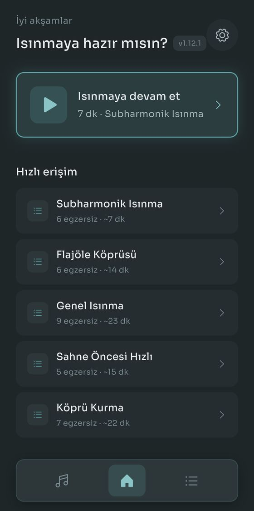
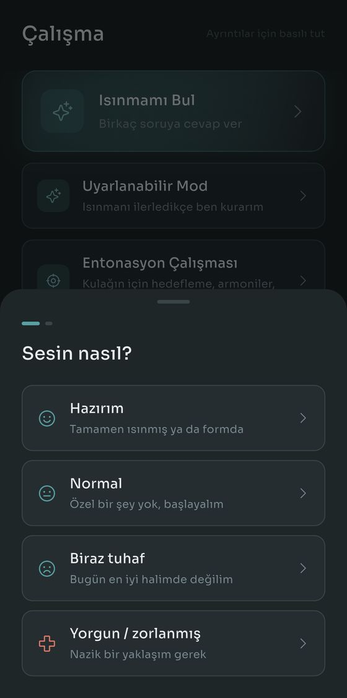
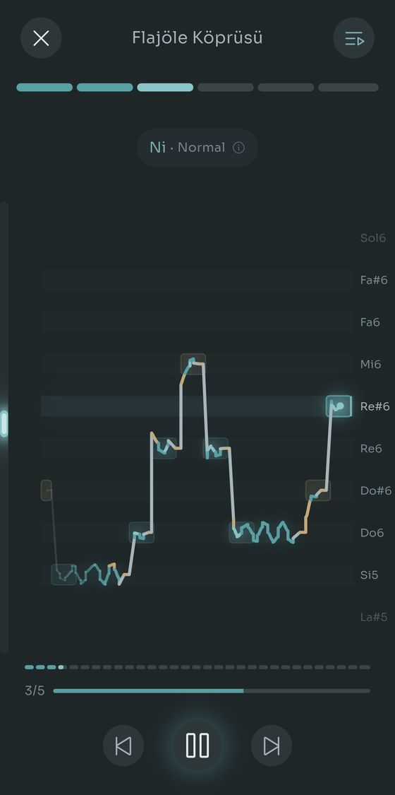
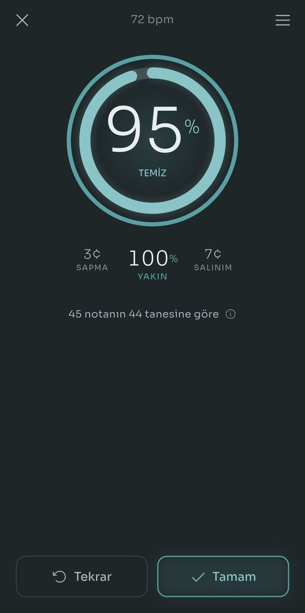
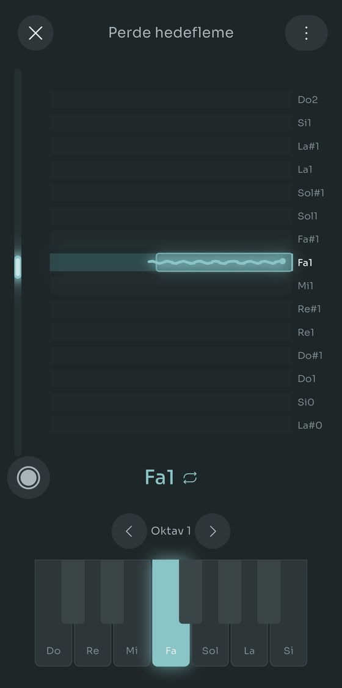
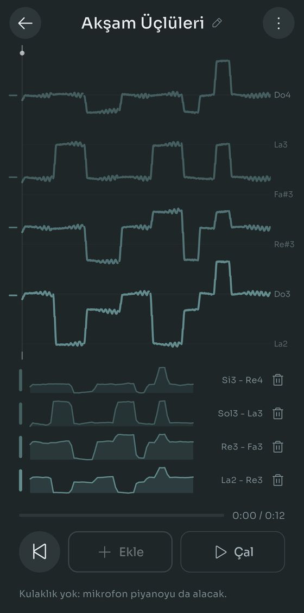
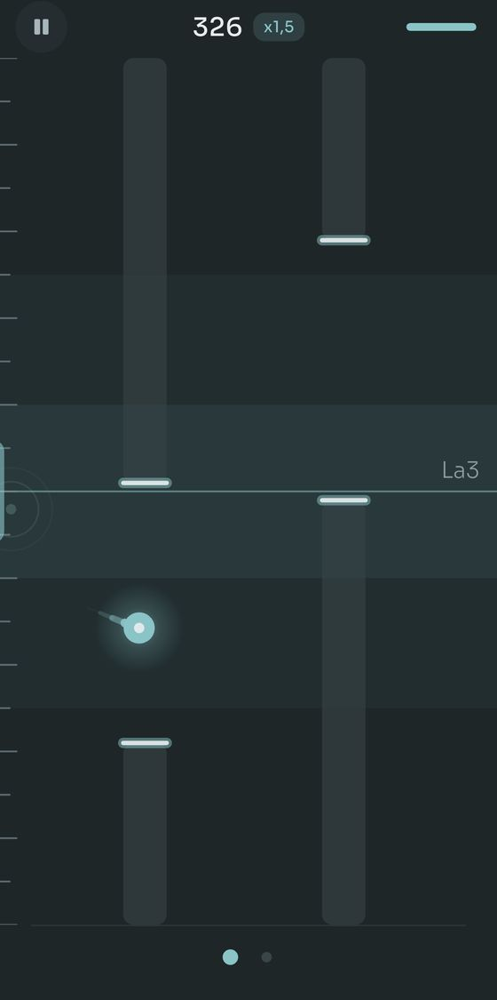
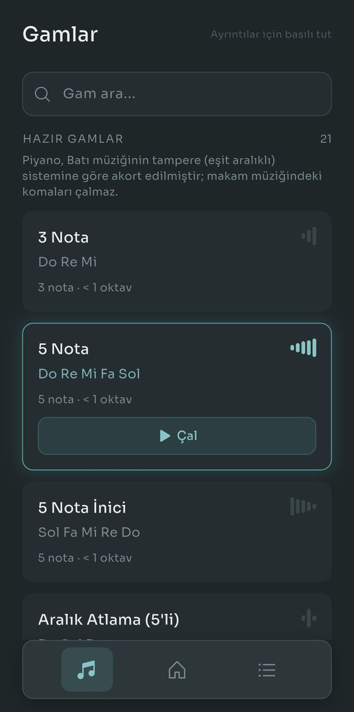
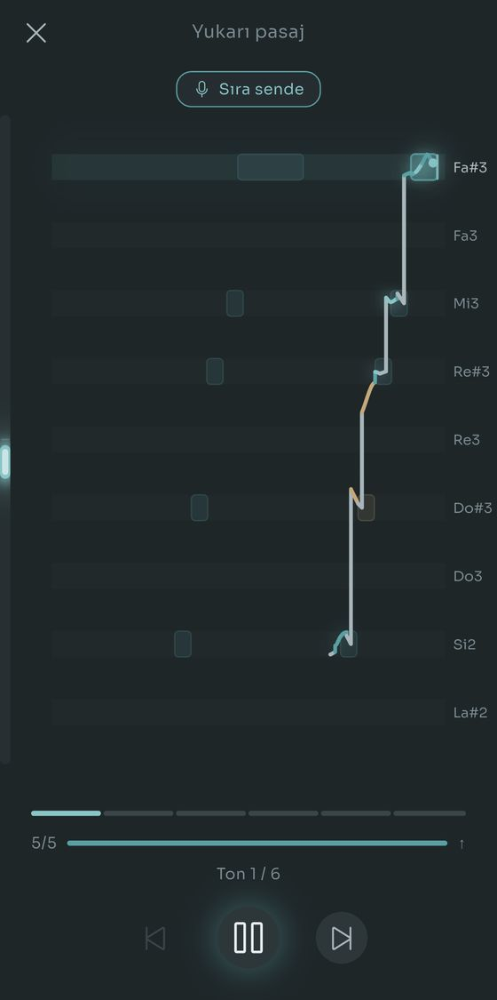

Sen söylerken Scalita gamları bir Salamander Grand Piano'da çalar. Ses aralığını bir kez belirlersin, her egzersiz ona uyacak şekilde transpoze edilir.
Basit gamlar. Gerçek piyano. Fazlası yok.








Önce okuman gereken bir şey yok, üye olman gereken bir yer yok.
Telefona doğru söyle, Scalita en pes ve en tiz notanı bulsun. Ya da bir ses türü seç ve bu adımı atla.
21 gam ve 15 rutin hazır geliyor. Hangisini seçeceğinden emin değil misin? İki soruyu cevapla, Isınmamı Bul senin için seçsin.
Piyano kalıbı çalar, yarım ses yükselir ve yeniden çalar, hepsi belirlediğin aralığın içinde.
88 tuşun hepsinde gerçek Salamander Grand Piano kayıtları, La0'dan Do8'e. Ne kadar kalın ya da ince söylersen söyle, o nota için kaydedilmiş bir ses var. Piyano, Batı müziğinin tampere sistemine göre (12 eşit yarım ses) akortludur; Türk makam müziğinin komalı aralıkları yer almaz.
Temiz söylemenin dört yolu. Hepsi kulağını ve sesini birlikte çalıştırır: notanın nerede olduğunu duyarsın, sonra sesini tam oraya yerleştirirsin.
Bir yenilik daha: kablolu kulaklık takılıyken her gam ve her rutin bir puanla biter. Ne kadarı temiz oturdu, gerisi ne kadar yakındı ve üzerinde çalışman gereken bir şey. Hepsi ücretsiz. Pro yalnızca perde hedeflemedeki çalışma kaydını ve birden fazla armoni saklama imkânını ekler.

Uygulamanın geri kalanı, dört parça hâlinde. Hiçbiri ilk gün ayağına dolanmaz.
Isınmamı Bul bugün sesinin nasıl olduğunu ve neye çalışmak istediğini sorar, sonra rutini seçip tempoyu ayarlar. Uyarlanabilir Mod ise planı tamamen bırakır: her egzersizden sonra nasıl geçtiğini, bir şey zorladıysa neyin zorladığını söylersin, sonraki egzersiz ona göre ayarlanır. On dakikan olduğunu söylersen bütün oturumu buna sığacak şekilde ayarlar, soğuma dahil.
Kulaklık tak, canlı bir iz her notada nereye oturduğunu gösterir: temiz olduğunda yeşil, kaydığında kehribar rengi. Kablolu kulaklıkla her gam ve her rutin ayrıca bir puanla biter: ne kadarı temiz oturdu, gerisi ne kadar yakındı ve üzerinde çalışman gereken bir şey. Perde hedefleme bunu her seferinde tek bir tuşa indirir ve kayıtlarını saklar: ses, perde çizgisi ve klavyenin o an ne yaptığı, böylece bir hafta sonra birini açıp bir şeyin değişip değişmediğini duyabilirsin.
Çoğu ısınma uygulaması göğüs sesi ve kafa sesinde durur. Gerçekten kullandığın her ses bölgesi için bir aralık belirle, üç ayrı rutin açılır: göğüs sesinin altındaki cızırtı, ses aralığının üstündeki flüt tınısı ve onun da üstündeki ıslık sesi. Geçiş bölgeni de işaretle, egzersizler onun etrafında kurulsun.
Gamları ve rutinleri sıfırdan kur: aralıklar, heceler, tempolar, başlangıç notaları. Ya da Gam Kaydı'nı aç, bir kalıbı söyle ya da çal, notaları o senin için yazsın. Baştan yazıldı: gerçek şarkı söylemede yaklaşık yarı yarıya daha az düzeltme gerektirir ve yazı turaya kalmış notaları işaretler, böylece nereye bakacağını bilirsin.
Her özellik ücretsiz çalışır. Pro, ne kadar saklayabileceğinin sınırını kaldırır.
Tek ödeme, abonelik yok. Her ülkedeki fiyatı Google Play belirler.
Google Play'de ücretsiz. Hesap yok, reklam yok, iptal edilecek bir şey yok.
Şimdilik sadece Android. Türkçe, İngilizce, İspanyolca, Fransızca, Portekizce, Almanca ve Endonezce.